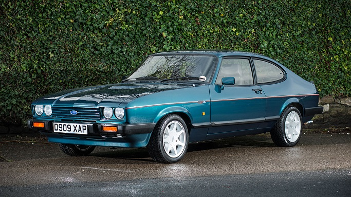

Why I Love Classic Cars
Hi, I’m James, and I’ve always been passionate about classic cars. On this blog, I share my love for classic Fords, especially the iconic Ford Capri. Feel free to explore my stories and experiences!
Brooklands Special 280i
My Classic Car Journey
I bought a 1984 Ford Capri Laser in 2001. It was a silver 1.6 LS model with just 67,000 miles on it. This car was my pride and joy, and I loved everything about it, from the leather interior to the engine sound.